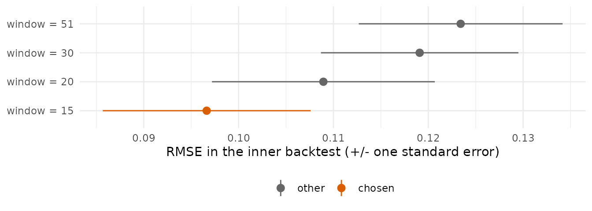
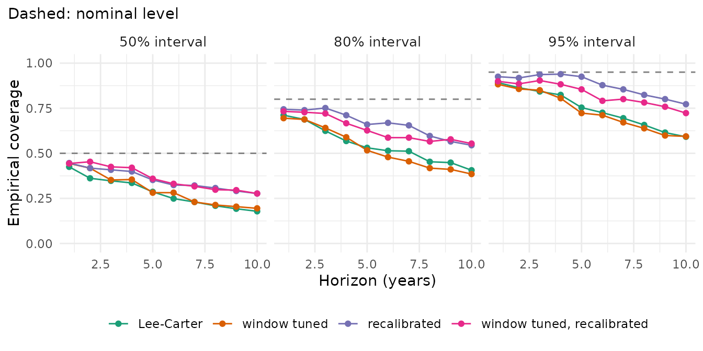

Two questions are easily confused:
- Tuning: which settings of a model forecast best? For example the number of years the model is fitted to, the number of components, or the smoothing parameter. Tuning tries several settings and keeps the one that forecast the last observed years best.
- Recalibration: how wide should the intervals be? A model’s intervals describe the uncertainty of its own assumptions. Recalibration rescales them so that they match the errors the model made in recent years.
Tuning changes the forecast itself; recalibration keeps the model and its central forecast and changes the width of the intervals. Both use only the training data, so they can be checked in a backtest (see “Backtesting and scores”). The examples use Lee-Carter on England & Wales men, ages 30-100, 1961-2011 (Human Mortality Database, via the StMoMo package).
library(mortensor)
library(data.table)
ew <- as_mt_data(StMoMo::EWMaleData)
ew <- mt_regroup(mt_set_grid(ew, age = single_ages(30, 100, open = FALSE)), age = single_ages(30, 100, open = FALSE))Tuning: the fitting window
Mortality decline in England & Wales changed pace in the 1970s.
Lee-Carter fitted to all years since 1961 averages over both regimes. A
shorter fitting window follows the recent pace but rests on fewer years.
Which window forecasts best? mt_tune() fits each candidate
to the years up to 2001, forecasts 2002-2011 (a hold-out of the last ten
years) and scores the forecasts. The window is a preprocessing step
(step_window()), so the candidate is a model with its
preprocessing:
window_model <- function(window) list(spec = lee_carter(), prep = mt_prep(step_window(window)))
tn <- mt_tune(window_model, data.frame(window = c(15, 20, 30, 51)), ew, inner_origins = 1, inner_h = 10,
metric = "rmse")
tn$scores
#> window rmse se selected
#> <num> <num> <num> <lgcl>
#> 1: 15 0.09663394 0.01095455 TRUE
#> 2: 20 0.10893774 0.01174786 FALSE
#> 3: 30 0.11908960 0.01040995 FALSE
#> 4: 51 0.12341207 0.01074560 FALSE
mt_plot_tuning(tn)
rmse is the root mean squared error of the forecast
median of the log rates; the bars show one standard error. The last 15
years forecast the held-out decade best, but the neighbouring window of
20 years lies only about one standard error behind: with a single
hold-out, such a choice is uncertain. tuned() wraps this
choice into a model: whenever it is fitted, it repeats the tuning on the
data it receives and then fits the chosen setting to all of them.
inner_origins = 1 is a single hold-out. Several origins
(inner_origins = 3, inner_h = 5) average over more periods,
and select = "one_se" keeps the simplest setting whose
score is within one standard error of the best.
target = "life_expectancy" tunes for life expectancy
instead of the rates.
Tuning pays where a setting changes the forecast substantively and
consistently. In outer backtests on England & Wales and France
(dev/tuning.md in the source repository) the tuned window
improved Lee-Carter clearly, while tuning the number of components and
the smoothing of hyndman_ullah() the same way did not: the
chosen setting changed from one year to the next, a sign that the
differences between the settings were mostly noise of the held-out
years.
Recalibration: the width of the intervals
recalibrated() refits the model at several origins
within the last ten training years, compares the forecasts with what was
observed, and rescales the spread of the draws around their median by a
factor that can grow with the horizon. The factor minimises the CRPS of
these recent forecasts:
fit_cal <- mt_fit(recalibrated(lee_carter()), ew)
fit_cal$calibration[, .(scale_h1, slope, crps_before, crps_after, cov95_before, cov95_after)]
#> scale_h1 slope crps_before crps_after cov95_before cov95_after
#> <num> <num> <num> <num> <num> <num>
#> 1: 2.663646 -0.08257622 0.07156094 0.06722745 0.6690141 0.9314554The factor at horizon 1 (scale_h1) is about 2.7:
Lee-Carter’s intervals were far too narrow in the last decade. The
factor changes little with the horizon (slope near 0, the
factor is scale_h1 * h^slope). Within the window,
recalibration raised the 95% coverage from 0.67 to 0.93.
Both together, checked in a backtest
The four versions in a backtest from the origins 1996-2001, forecasting ten years each; tuning and recalibration are repeated at every origin from its own training data:
tuned_lc <- tuned(window_model, data.frame(window = c(15, 20, 30, 51)), inner_origins = 1, inner_h = 10,
metric = "rmse", label = "Lee-Carter, window tuned")
bt <- mt_compare(list("Lee-Carter" = lee_carter(), "window tuned" = tuned_lc,
"recalibrated" = recalibrated(lee_carter()), "window tuned, recalibrated" = recalibrated(tuned_lc)),
ew, origins = 1996:2001, h = 10, n_draws = 200, quantities = "life_expectancy")
mt_score_table(bt, metrics = c("crps", "cov95"))
#> model crps cov95 crps_le cov95_le
#> <fctr> <num> <num> <num> <num>
#> 1: Lee-Carter 0.0687 0.746 0.473 0.917
#> 2: window tuned 0.0573 0.733 0.287 1.000
#> 3: recalibrated 0.0657 0.877 0.442 1.000
#> 4: window tuned, recalibrated 0.0559 0.828 0.289 1.000
mt_plot_coverage(bt)
The tuned window makes the forecasts more accurate: CRPS 0.057
against 0.069 for the rates, 0.29 against 0.47 years for life expectancy
at 30 (_le). Recalibration widens the intervals: the 95%
coverage of the rates rises from 0.75 to 0.88, and from 0.73 to 0.83 for
the tuned model, whose recent errors were smaller, so its intervals
widen less. The coverage of life expectancy is high for all versions:
errors of single ages partly cancel in life expectancy. Tuning and
recalibration answer different questions and combine: the tuned and
recalibrated version has the lowest CRPS of the rates (0.056).
Options
-
recalibrated(by = "sex"): separate factors for groups of strata (with joint models, contrasts between the groups then get wider intervals); -
recalibrated(ages = c(50, 75)): separate factors for age bands; -
recalibrated(quantity = "life_expectancy"): recalibrate the intervals of life expectancy instead of single rates; -
recalibrated(n_boot = 50): bootstrap intervals of the factors, which rest on few forecasts; -
tuned(..., by = "sex"): tune and fit groups of strata separately.
Summary
| Question | Function | Changes |
|---|---|---|
| Which settings forecast best? |
mt_tune(), tuned()
|
the forecast |
| How wide should the intervals be? | recalibrated() |
the width of the intervals |
| Did it help? |
mt_compare(), mt_score_table()
|
nothing; it checks |